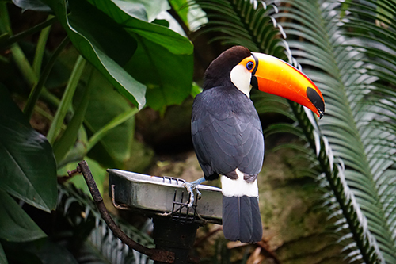
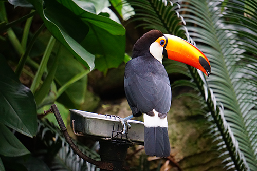
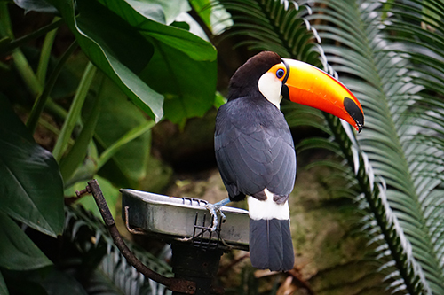

Okay that might seem like a bit of a stretch, but it’s true, and you have to admit it’s fun to say. At Sugar Taco, we believe great food and great ethics go hand in hand. Our menu stays true to authentic Mexican flavors without any of the icky stuff that comes from animal products (like the deforestation, the heart disease, the killing animals, you know). We are proud tree huggers and we source our produce from local organic farmers.
We'd love to keep talking about ourselves but... We think mouths and hands are better put to work eating nachos and churros. Washed back with our delicious agua fresca of course. And a burrito for good measure. Oh, and the beans! The beans are really good. Maybe some soft serve or pan dulce. And the street corn! You have to try the street corn!
So to wrap it up... (damn, now I’m thinking about burritos again), eating one meal at Sugar Taco •saves an animal’s life •spares 10 sq feet of forest •conserves 375 gallons of water •makes our moms proud •lowers your carbon footprint •feeds a starving child (we don’t mean you, bro) •plants trees (yeah, we do that). So quit staring at your screen and start saving the world. See you at Sugar Taco. You can even wear a cape, we won’t judge.
